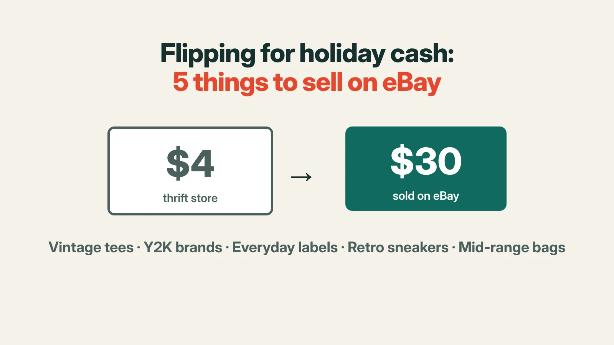

Start a Business desk · Reselling
Start flipping on eBay this holiday: 5 picks from eBay's own trend data
A $4 thrift-store T-shirt can sell for $30 on eBay, and eBay says vintage tees are searched more than 5,532 times an hour worldwide this year. Here are 5 picks from eBay's own trend data, what you keep after fees, and what shipping costs this holiday season.

The short version: A $4 thrift-store T-shirt can sell for $30 on eBay, and this year shoppers there searched for vintage tees more than 5,532 times an hour worldwide, eBay says. That's the opportunity in flipping: buy secondhand things people already want, list them, and ship them. Here are 5 to start with, using eBay's own trend data, plus what you keep after fees.
Who this is for: anyone in the US with a closet, a thrift store nearby and a few spare evenings before Christmas. You can list 250 items a month on eBay with no listing fee.
The 5 things to look for
These come from eBay's Fall/Winter 2026 Watchlist report, which covers worldwide eBay data from January to September 2026. That shows what people want, not what will sell near you at Christmas. The picks are ours, chosen for what a beginner can often find cheaply.
- Vintage T-shirts. Searched more than 5,532 times an hour in 2026. Band, film and cartoon tees are the ones eBay names, from Spider-Man to Hannah Montana.
- Y2K brands. "Y2K" is searched about 1,300 times an hour. Listings for Von Dutch are up 377% and Ed Hardy up 343% between January and September.
- Everyday labels. Ralph Lauren, Coach, Tommy Hilfiger, Michael Kors, J.Crew, GAP, Brooks Brothers and Calvin Klein are among the most-bought homegrown labels this year. These turn up in thrift stores all the time.
- Retro sneakers. Nike and Air Jordan lead sales up to $500. Some older styles are climbing fast: average sale prices for the Puma Speedcat Go are up 191%.
- Mid-range bags. The average sale price of the Ralph Lauren Bellport Tote is up 664% this year.
The catch: more listings means more sellers
Here's the part to read twice. When eBay says Von Dutch listings are up 377%, that means a lot more competing stock. Demand matters, but so does the price things actually sell for.
So before you buy anything, search for it on eBay and filter to sold items. If it sells often at a price that leaves you a profit, buy it. If it's only listed, not sold, leave it on the rack.
What you keep after fees
eBay's final value fee for most categories is 13.6% of the total sale, including any shipping and sales tax the buyer pays, plus $0.40 an order over $10 ($0.30 at $10 or less). Here's our worked example for a tee you sell for $30 with free shipping:
| Amount | |
|---|---|
| Sale price | $30.00 |
| eBay fee (13.6% plus $0.40) | −$4.48 |
| Shipping label (our estimate) | −$5.00 |
| What you paid at the thrift store | −$4.00 |
| You keep | about $16.50 |
Sales tax adds a little to the fee: at a 7% tax rate, it's about $0.30 more here. Packaging, any returns and your time come out of the rest. Two category rules are worth knowing. Athletic shoes that sell for $150 or more pay 8%, with no per-order fee. Women's bags pay 15% up to $2,000.
What shipping costs now
Two changes matter for flippers this season:
- Lighter packages changed in July. USPS changed how it prices Ground Advantage packages under a pound on July 12, 2026, so don't trust last year's label prices. Weigh your item in its mailer and check.
- The holiday bump. USPS Ground Advantage, Priority Mail and some other services cost about 6% more on average from October 4 to January 17. A 3-pound package to a nearby zone is up $0.40, for example.
Price your label in eBay's shipping calculator before you list, and charge shipping or build it into your price.
Three things to know before your first sale
- Fakes get you banned. eBay removes counterfeit listings and can suspend sellers. If you can't tell a designer piece is real, don't buy it to resell.
- New sellers may wait for payouts. eBay can hold a new seller's first payments for a while, so don't spend money you haven't been paid yet.
- Profit is taxable income. Keep your receipts from the thrift store and a simple record of every sale.
Do this now
- Search sold listings for each of the 5 picks, and write down what they really sell for.
- Take $20 to a thrift store and buy only what passes that check.
- Score each find with our free reselling sourcing scorecard before you pay.
- List everything that passes this week. Clear photos on a plain background, measurements, and any flaws.
- Ship within a day of each sale. Fast shipping helps your seller rating.
What's still unknown: how long these trends last. eBay's figures run to September, so check sold listings again before you buy in bulk.
What we checked: eBay's Fall/Winter 2026 Watchlist Trend Report and its November 10 release, eBay's selling fees page, and reporting on USPS's 2026 price changes, all read on November 16, 2026. The T-shirt prices and label cost are our own worked example.
Sources, checked 18 Nov 2026
- eBay, 'Watchlist Trend Report, Fall/Winter 2026' (global data, January to September 2026), read 16 Nov 2026. pages.ebay.com
- eBay Inc., Watchlist Trend Report news release, 10 Nov 2026, read 16 Nov 2026. ebayinc.com
- eBay Help, 'Selling fees', read 16 Nov 2026. ebay.com
- Supply Chain Dive, 'USPS announces 6% rate increase for 2026 peak season', on the USPS release of 25 Aug 2026, read 16 Nov 2026. supplychaindive.com
- Pirate Ship, 'July 2026 USPS rate and rule changes', read 16 Nov 2026. support.pirateship.com
Applies to: people in the US starting to resell secondhand clothes, shoes and accessories on eBay.
How this was made: researched from the sources below, checked claim by claim and edited by Drew Halden. Editorial responsibility: ePORTS LLC. Nothing here is legal, tax or financial advice. Spotted an error? Tell us and we'll correct it on this page.